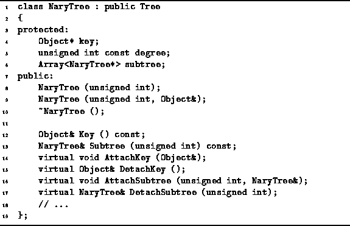

Data Structures and Algorithms
with Object-Oriented Design Patterns in C++
Data Structures and Algorithms
with Object-Oriented Design Patterns in C++
We now turn to the implementation of N-ary trees
as given by Definition  .
According to this definition,
an N-ary tree is either an empty tree
or it is a tree comprised of a root and exactly N subtrees.
The implementation follows the design pattern
established in the preceding section.
Specifically, we view an N-ary tree as a container.
.
According to this definition,
an N-ary tree is either an empty tree
or it is a tree comprised of a root and exactly N subtrees.
The implementation follows the design pattern
established in the preceding section.
Specifically, we view an N-ary tree as a container.
Figure illustrates the way in which
N-ary trees can be represented.
The figure gives the representation of the tertiary (N=3) tree

The basic idea is that each node has associated with it an array of length N of pointers to the subtrees of that node. An array is used because we assume that the arity of the tree, N, is known a priori.

Figure: Representing N-ary Trees using Pointer Arrays
Notice that we explicitly represent the empty trees. I.e., a separate data structure is allocated for the representation each empty tree. Of course, an empty tree contains neither root nor subtrees.
Program declares the NaryTree class
which represents N-ary trees
as specified by Definition .
The class NaryTree is derived from the base class Tree which,
as discussed in the preceding section,
combines the tree and container interfaces.

Program: NaryTree Class Definition
 Copyright © 1997 by Bruno R. Preiss, P.Eng. All rights reserved.
Copyright © 1997 by Bruno R. Preiss, P.Eng. All rights reserved.